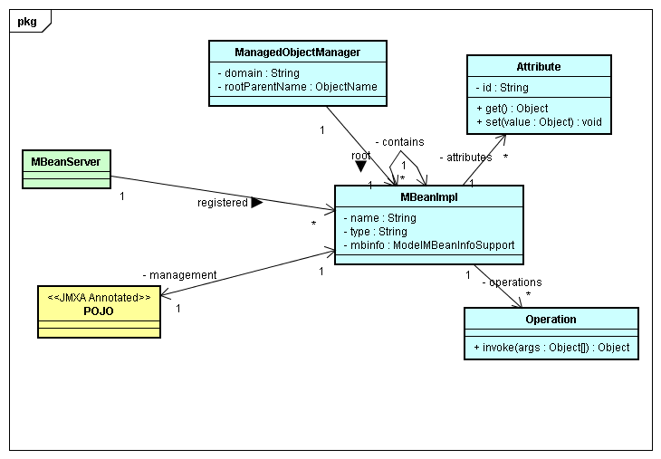

GlassFish MBean Annotation Library (gmbal)
Functional Specification
by Ken Cavanaugh
Version 1.0 (for GlassFish v3 FCS)
12/11/09
1. Introduction
The GlassFish MBean Annotation Library (gmbal, pronounced as in
"gumball")
is a runtime annotation processor that creates Open MBeans. This is
useful for
creating a management API for existing code with minimal effort.
It is
intended to be applied to existing modules (which may be OSGi bundles
in
GlassFish v3, or any other packaging model including standard jar
files), but
could be used anywhere that it is desired to combine the definition of
the
management API with the module API and implementation.
Note that gmbal is not limited to use in GlassFish. Gmbal is
completely independent of GlassFish, and may be used in a context where
GlassFIsh is not present. However, when a gmbal-enabled module in used
in
GlassFish V3, that module will automatically be manageable using
GlassFish V3
admin tools.
There are really two parts to creating a management API for a
module:
instrumenting the module implementation, and providing a client
interface that
may be accessed remotely. This is closely related to the AMX work in
GFv3. AMX defines the interface for AMX MBeans, and provides
tools and libraries for clients accessing AMX MBeans. Gmbal is a
library that provides a mechanism for implementing AMXv3-compliant
MBeans.
1.1. Alignment with related projects
JMX is also defining similar annotations in JSR 255 for JDK 7.
The JSR 255 spec is available at the download page.
Gmbal is mostly aligned with the JSR 255
annotations.
The similarities include:
Differences:
- The packaging is necessarily different: org.glassfish.gmbal for
gmbal, javax.management for JSR 255.
- Gmbal uses @ManagedObject
instead of @MBean (part of JSR 255) or @MXBean.
- Gmbal only supports attribute change notifications, so
the @NotificationInfo annotation (from JSR 255) does not exist in
Gmbal. See "register
and registerAtRoot" for a discussion on notification support.
- Gmbal has an @ManagedData
annotation to define the mapping of data types into CompositeData,
while JSR 255 follows MXBeans and simply assumes that all methods that
follow the JavaBeans patterns define read-only attributes.
- Gmbal supports an @AMXMetadata
annotation, but this is really just an extension to the descriptor
annotation mechanism borrowed from JMX ModelMBeans. The
@AMXMetadata annotation is provided to support AMX-specific metadata.
- Gmbal includes @ParameterNames
to provide reasonable names for the arguments on MBean
operations. JSR 255 does not currently have such a mechanism,
because JDK 7 will have an extension to Java reflection that captures
the argument names on methods.
- Gmbal includes @NameValue
to make it easy to define the value of the "name" field in the
ObjectName. This makes registration of object as MBeans slightly
simpler.
- Gmbal includes @IncludeSubclass,
which allows limited (and closed) polymorphism for CompositeData.
This partially solves the problem of mapping a group of types sharing
type Base that appear as (for example) attributes with type
List<Base>.
- Gmbal includes @InheritedAttribute(s)
to allow using methods inherited from super classes or super interfaces
that cannot be annotated as attribute and operations.
- Gmbal is more limited currently in mapping OpenType -> Java
type than JMX is, as this does not seem to be a feature that we need.
Note that there are two complimentary ways to define MBeans: MXBeans
and
annotations. MXBeans are somewhat more convenient to use in cases
where EVERY
method in a class or interface is part of the management interface,
whereas
annotations are more convenient for adding a management interface to
existing
code. But both mechanisms share most of the same rules for MXBean
mapping from
Java types to Open types as discussed in "OpenType Mapping".
AMX in GlassFish v3 is being generalized to define exactly what an
MBean must
do to be manageable in the GlassFish v3 admin tools (see Lloyd's GlassFish
V3 AMX SPI specification). Gmbal will follow all mandatory and most
of the
optional requirements of this specification so that any module that
uses gmbal
to define MBeans will automatically participate in the GFv3 admin tools
when run in a GFv3 container. However, this will not prevent
the use of
gmbal in these same modules as a standalone MBean definition library.
This last point needs a little more explanation. The main
interface that
matters for running in or out of a GFv3 container is
ManagedObjectManagerFactory.createXXX
(XXX is either Standalone or
Federated).
The createStandalone method is needed for running outside of GFv3, and
takes
the domain name as an argument. createFedederated must be called inside
of
GFv3, and this requires the AMXv3-compliant ObjectName of the
ManagedObjectManager root
MBean's
parent. Calling the appropriate method is probably best handled
in most cases
by having an OSGi bundle for a module that is responsible for
integrating the
module into GFv3.
For example, the orb-iiop bundle integrates the standalone ORB bundles
into GFv3. orb-iiop handles
registration of all of the GFv3-specific interceptors and other
initialization
when the GFv3 ORB instance is created. orb-iiop will also need to set
the ORB property com.sun.corba.ee.ORBGmbalRootParentName to the string
representation of the ObjectName of the ORB's gmbal root parent.
The ORB will then use this property to call either createStandalone (if
it is not set) or createFederated (with the value of the property as
the ObjectName passed into the call).
1.2. Similar projects
Besides JSR 255 (discussed in the previous section), there are at least
two other
projects that also define MBeans using annotations.
The Spring project also defines a set of annotations
to use for creating
MBeans. Eamonn McManus has pointed to this as one of the starting
points for JSR 255 in a blog post
from August 2007. JSR 255 and Spring share the @ManagedAttribute
and @ManagedOperation annotations, but the Spring annotations
include a description fields, whereas JSR 255 has moved the description
into a separate annotation (as I have
in gmbal as well).
The WebObject project from INRIA in France has created the SpoonJMX
project, which
also allows the use of annotations to define MBeans. SpoonJMX uses
@ManagedResource to define an MBean class. It
uses @ManagedAttribute and @ManagedOperation as in the other
systems. SpoonJMX defines a @ObjectKeyName annotation,
which I have adopted for use in gmbal as well under the name of
@NameValue. SpoonJMX also
defines more attributes on the annotations than
either gmbal or JSR 255.
2. The Management Data Model
Gmbal supports a simple hierarchical model of management data as
defined in JSR
77 and AMX.

The components of the data model are as follows:
- A ManagedObjectManager acts as a container for all state related
to a particular usage of gmbal. This includes:
- A domain to use for all ObjectNames created in this
ManagedObjectManager.
- A rootParentName, which is the ObjectName of the parent of
the ManagedObjectManager.
- A root object, which represents the top of the tree of MBean
managed by the ManagedObjectManager.
- From a POJO with annotations, an MBeanImpl is constructed, which
implements the dynamic MBean API. This dynamic MBean is
associated with additional classes:
- 0 or more Attributes, which may be getters or setters or both
(note that AMX will give as at least Name, Parent, and Children
attributes).
- 0 or more Operations, which may be invoked.
- Metadata, represented by ModelMBeanInfoSupport (so that
metadata Descriptors are available on JDK 5 as well as JDK 6). The
Metadata is extensible through the use of the @DescriptorKey and
@DescriptorField meta-annotations.
- A single parent MBeanImpl, which may be null (this is one end
of the contains relation).
- 0 or more child MBeanImpls (this is the other end of the
contains relation).
- Following AMXv3, the ObjectName of the MBean will contain 3
name/value pairs:
- pp, which is the AMXv3 parent path, or the path name of the
parent of this MBean
- type, which is derived from the Class using annotations or
other mechanisms
- name, which is derived either from the registration call,
or a method on the object. The name is absent in the case of a
singleton. In any case, the type and name (if present) must be
unique within the scope of the parent.
- Attributes and Operations have ids, which are generally derived
from the name of the annotated method as discussed here, but the id
may also be specified in the @ManagedAttribute
and @ManagedOperation
annotations, as well as in the @InheritedAttribute
annotation.
Note that all values consumed or produced by Attributes and Operations
are
instances of OpenTypes.
This diagram is a simplification of the actual implementation of
gmbal. In
particular, the metadata, attributes, and operations are
maintained in a
MBeanSkeleton
class, which is shared by all MBeanImpls for instances of the same
class. The TypeConverter
that handles conversion between Java types and the corresponding
OpenType is also
not
included here.
3. Interfaces
Javadocs are available as part
of the
gmbal project.
There are basically 3 elements to the gmbal API:
- class ManagedObjectManagerFactory, which provides factory methods
for creating instance of the ManagedObjectManager interface.
- interface ManagedObjectManager, which provides
register/deregister methods (and a number of other capabilities).
- A number of annotations.
Here is a summary of the annotations:
Annotation
Class
|
Annotation
Fields
|
Applicable
Element Type
|
Relation
to JSR 255
|
Purpose
|
@ManagedObject
|
none
|
Class or Interface
|
255 uses @MXBean
|
Defines a class whose instances
are processed into MBeans.
|
@ManagedData
|
String name (defaults to class
name)
|
Class or Interface
|
MXBeans assume all methods are
in CompositeData
|
Defines a class whose instances
are process into Open data for Open Mbeans.
|
@ManagedAttribute
|
String id (defaults to value
from Method name)
|
Method or field
|
Same
|
Defines a method or field that
represents
an attribute either in ManagedData or ManagedObject
|
@ManagedOperation
|
String id (defaults to value
from Method name)
Impact impact (defaults to UNKNOW; Impact enum corresponds to
MBeanOperationInfo impact values)
|
Method
|
Same
|
Defines a method that represents
an operation in ManagedObject
|
@Description
|
String value
String key (the key to use in a generated resource bundle; default ""
means to derive key from name of annotated element)
|
Class, Interface, Method,
or Field
|
Same (but JSR 255 includes I18N)
|
Defines the descriptive text
associated with a Class, Interface, or Method. This may require I18N,
as discussed here.
|
@IncludeSubclass
|
Class[] value
|
Class or Interface for
ManagedData
|
N/A
|
Lists subclasses of the
annotated class that should also be scanned for annotations which are
included only on instances of the appropriate type
|
@NameValue
|
none
|
Method
|
N/A
|
Defines a method (must be a
getter) whose result is the value of the name attribute in the
ObjectName of the MBean for an instance of the class
|
@ParameterNames
|
String[] value (defaults to "")
(if present, must have same length as number of arguments in the
annotated method)
|
Method
|
N/A (JSR 255 will take this
information from reflection, which will make arg names available in JDK
7)
|
Defines the method names to be
used on an MBean operation. If this annotation is not present or has
the default value, the names will be argNum, where Num is the position of the argument
starting from 0
|
@InheritedAttribute
|
- String description
- String id (default "" which means take from method name)
- String methodName (default "" which means use id)
one of methodName or id must NOT be ""
|
Class or Interface
|
N/A
|
Defines a method inherited from
a class that cannot be annotated as an attribute. See "addAnnotation" for a discussion of
the use of this annotation.
|
@InheritedAttributes
|
InheritedAttribute[] value
|
Class or Interface
|
N/A
|
Allows including multiple
inherited attributes
|
@AMXMetadata
|
- boolean isSingleton() (true if only one MBean of this
type is allowed as a child of another MBean)
- String group() (value is the group for this mbean, defaults
to "other")
- String[] subTypes() (value is the list of allowable types
for children of this bean)
- String genericInterfaceName() (used in AMX proxy
construction)
- boolean immutableInfo() (true if the MBeanInfo
can never change)
- String interfaceClassName() (also used in AMX proxy
construction)
- String type() (the type to use in an ObjectName or in an
admin CLI path expression: defaults to class name, but see
also stripPrefix)
(This is just an application of @DescriptorKey, with a little
special support in the gmbal implementation)
|
Class or Interface
|
N/A (but JMX supports
descriptors; see below)
|
Adds GFv3 and AMX specific
metadata to be defined for MBeans (see "Metadata Support" for more details).
|
@DescriptorKey
|
String value
|
Annotation method
|
same as JSR 255
|
Define metadata that can be
added to any MBean (see "Metadata
Support" for details)
|
@DescriptorField
|
String value (must be name=value)
|
Class, Interface, or Method
|
same as JSR 255
|
Define metadata directly on
MBean (See "Metadata Support" for
details)
|
Note that @ManagedAttribute and @Description may be used on fields.
There is however a limitation: any such field MUST be final, and have a
known immutable type. This is necessary to guarantee that access
to the field is safe in the presence of multiple thread. The
legal types are basically the SimpleTypes from JMX OpenType, with a
couple of additions:
- The primitives (boolean, byte, char, short, int, long, float,
double) and the corresponding java.lang wrapper classes (Boolean, Byte,
Character, Short, Integer, Long, Float, Double).
- String
- BigDecimal, BigInteger
- Date
- ObjectName
- Class
- Number
- Object
3.1. The ManagedObjectManagerFactory
The ManagedObjectManagerFactory is primarily used to create
ManagedObjectManagers. It is the only concrete class in the gmbal
API, which is defined in the package org.glassfish.gmbal.
Obviously the implementation has other concrete classes, but these are
contained in subpackages under org.glassfish.gmbal.
3.1.1. getMethod
This is a simple wrapper around Class.getDeclaredMethod that converts
the
checked exceptions from getDeclaredMethod into unchecked
exceptions. It is
intended for use with the addAnnotation
method.
3.1.2. create
There are two versions of create: createStandalone( String ) and
createFederated( ObjectName ).
createStandalone( String ) is used to create a standalone hierarchy:
the String is the
domain to use for all ObjectNames created from the resulting
ManagedObjectManager. In this version, the root has no parent.
createFederated( ObjectName ) is used to create a hierarchy of MBeans
that are rooted
under a parent MBean that is not managed by the created instance of
ManagedObjectManager. In this case, the parent of the
ManagedObjectManager is
identified by the object name (called the rootParentName) that is
passed to the
create call. Note that the root parent MBean MUST be managed by
the same
MBeanServer as the ManagedObjectManager. The ObjectName MUST be
an AMX-compliant ObjectName: in particular, it MUST define pp, type,
and
name attributes.
Note that createFederated must obey the parent-child restriction in
AMX. That is, a child cannot be created
before its parent has been created. It is possible that the root
parent ObjectName passed to createFederated does not correspond to a
valid MBean in the MBeanServer at the time that createFederated is
called. In this case, the Gmbal ManagedObjectManager
created by the createFederated call must defer registration of its
MBeans until after the root parent has been registered. The MOM
monitors the root parent in the MBeanServer, registering and
de-registering all MBeans in the mom's tree as the root parent is
registered and de-registered.
For examples of the usage of these methods, see "Using Gmbal".
3.2. The ManagedObjectManager
The ManagedObjectManager is the main API for gmbal. It contains a
tree of
MBeans with a single root,
which may optionally be federated into a large MBean hierarchy.
The most important methods are createRoot, register, and
unregister. Any
application of gmbal must use these methods. For examples of the
usage of the key methods, see "Using Gmbal".
3.2.1. createRoot
There are several methods to create a root in the
ManagedObjectManager.
createRoot() creates a root that simply acts as an AMX container.
Its type
and name are both set to GMBALROOT.
createRoot( Object ) and createRoot( Object, String ) both use the
given object
as the root, and just as in the register methods, these methods create
an MBean
from the Object using the annotations on its class. The createRoot(
Object )
method will derive the name from the object itself by calling the
@NameValue method from the class. If no such method is
available, the
name is set to the type value. The second method allows the name
to specified
explicitly. This can be useful in case where either
@NameValue is not
used, or there are multiple ManagedObjectManager instances with the
same root
type that share the same parent. In this case, it is essential
that each root
have a distinct name.last. There is also a createRoot() method,
which creates a simple internal root that only provides the required
AMXv3 attributes.
createRoot may only be called when the ManagedObjectManager does not
already
contain a root. This is true immediately after a
ManagedObjectManagerFactory.create call, or after unregistering the
root.
3.2.2. getRoot
getRoot returns the current root of the ManagedObjectManager. If
no root is
available, getRoot throws an IllegalStateException.
3.2.3. register
and registerAtRoot
There are two forms of register: register( Object parent, Object obj )
and
register( Object parent, Object obj, String name ). The first
form obtains
the name from obj (by using @NameValue),
the second allows explicit specification of the name. The
returned result is
an instance
of NotificationEmitter that may be used to register a
NoticationListener to
listen for attribute change notifications on the
MBean that was created for obj.
There are also two forms of registerAtRoot: registerAtRoot( Object obj
) and
registerAtRoot( Object obj, String name). These methods are
exactly
equivalent to mom.register( mom.getRoot(), obj ) and mom.register(
mom.getRoot(), obj, name ).
All of these methods can only be called after a successful createRoot
call.
3.2.4. unregister
unregister( Object ) unregisters an object that was previously
registered. It
also deletes any children of the object in depth-first order.
Unregister
removes the generated MBean from the ManagedObjectManager and also
unregisters
the MBean from the ManagedObjectManager's MBeanServer.
Unregister can only be called after a successful createRoot call.
3.2.5. getObject/getObjectName
The register methods return a NotificationEmitter which can be used to
register
a NotificationListener to listen for attribute change events. But
sometimes
access to the ObjectName is needed. getObjectName returns the
ObjectName that
was created for an object that was passed to the register method.
getObject
is used to handle the opposite case: going from the ObjectName to the
registered Object. Note that in both case the registered Object
is the
implementation object passed to a register method, NOT the internally
created
dynamic MBean (which is not directly provided).
These methods can only be called after a successful createRoot call.
3.2.6. stripPrefix and stripPackagePrefix
A type prefix is simply a prefix of a fully qualified Java class name.
By
default, the MBean ObjectName type field is set to the full qualified
class
name of the implementation class, stripped of the longest type prefix
of the
class name. For example, in CORBA the type prefixes are set to:
com.sun.corba.se
com.sun.corba.se.spi
com.sun.corba.se.spi.orbutil
com.sun.corba.se.impl
com.sun.corba.se.impl.orbutil
This helps keep the ObjectNames to a reasonable length.
Applications of gmbal
are also free to specify the exact type name to use through an
annotation.
stripPackagePrefix is used to indicate that ALL package prefixes should
be removed from the class name for the default type.
These methods may only be called before a successful createRoot call.
3.2.7. MBeanServer
and
ResourceBundle
Accessors (getter and setter) are provided for the MBeanServer and the
ResourceBundle.
The MBeanServer is used for all register and unregister operations in
the
ManagedObjectManager instance. It defaults to the
platform MBeanServer.
The ResourceBundle is used to internationalize all descriptions.
If set, the
description value is used as a key in the resource bundle,
otherwise the description value is taken as the actual description.
3.2.8. addAnnotation
The best way to explain this method is to start with an example.
CORBA
defines a class org.omg.PortableServer.Servant. The
definition of Servant is a standard, and so I cannot add annotations to
the
source code for Servant. Gmbal is flexible enough that we can put
the annotation almost anywhere, so what are the possible
subclasses of Servant? Mostly one subclass is used in GlassFish for
dynamic RMI-IIOP: ReflectiveTie,
but others are possible, including Ties generated by the idlj
compiler. We also cannot add non-standard
annotations to standard-compliant code generated by a code generator.
This becomes an issue when adding annotations to things like the ORB's
POA,
which has a method:
@ManagedData
Servant get_servant() { ... }
that I would like to use as an attribute. How should gmbal
represent Servant
in this case? I may want to represent the Servant as ManagedData,
using one or more methods (such as byte[]
_object_id()) on the Servant as attributes, but there is no place that
I can put an annotation for this.
The solution I have adopted in gmbal is to allow annotations to be
added on
"dummy" classes, and then use ManagedObjectManager.addAnnotation
to add the annotation to the appropriate
type. For example, the above example can be handled by:
@ManagedData
@InheritedAttributes( {
@InheritedAttribute( methodName="_object_id", id="objectId",
description="The Object Id for this Servant" ),
... // several other methods
} )
public interface DummyServant {}
mom.addAnnotation( Servant.class,
DummyServant.class.getAnnotation( ManagedObject.class ) ) ;
mom.addAnnotation( Servant.class,
DummyServant.class.getAnnotation( InheritedAttributes.class ) ) ;
This behaves exactly as if the annotations on DummyServant were on
Servant,
allowing the appropriate annotation processing to take place.
InheritedAttribute can also be used when it is desired to use a method
inherited from a super class as an attribute or operation. This
is useful in the case where the superclass is
a class that for whatever reason cannot be modified with an
annotation. For example, the GlassFish v3 ORB defines an
interface TaggedProfileTemplate (in com.sun.corba.se.spi.ior) as
follows:
@ManagedData
@Description( "A template for creating a TaggedProfile" )
@IncludeSubclass( { com.sun.corba.se.spi.ior.iiop.IIOPProfileTemplate.class } )
@InheritedAttribute( description="List of TaggedComponents for this template",
methodName="iterator", id="TaggedComponents" )
public interface TaggedProfileTemplate extends List<TaggedComponent>,
Identifiable, WriteContents, MakeImmutable
{
...
}
Here the iterator method is inherited from
List<TaggedComponent>. The iterator() method then has type
Iterator<T>, where T is bound to TaggedComponent. This results in
a CompositeData attribute with id TaggedComponents, which returns an
OpenType which is an array of whatever TaggedComponent maps to
(CompositeData as discussed in "Handling
Polymorphism").
3.2.9. Debugging support
Gmbal is a fairly complex system, and it is possible to apply it in
ways that
lead to incorrect results. To avoid problems, following the suggested
patterns in "Using Gmbal" will
help. Mistakes such as using an @ManagedAttribute operation on a
method that is not a valid attribute should be obvious from the
exception thrown by the register call. But perhaps the problem is
simply that the MBean definition is not exactly what was expected, due
to the pattern of annotations across multiple class and interface
definitions. Some assistance may be needed from gmbal to see what
exactly is happening, and also to aid in identifying bugs in gmbal
itself.
To help with these kinds of problems, gmbal has several features that
can be useful for
debugging:
- setRegistrationDebugLevel( RegistrationDebugLevel level ).
Here the level can be NONE, NORMAL, or FINE. When enabled, this
method causes detailed tracing (more detailed with FINE) of the
operations involved in registering an MBean.
- setRuntimeDebugLevel( boolean flag ). If this is enabled,
the operations involved in getting or setting attributes or calling an
operation on an MBean are traced.
- setTypelibDebug( int level ). This is used to trace typelib
operations. 1 traces only basic operation, while >1 gives full
details (produces a lot of output).
- String dumpSkeleton( Object obj ). If obj is an object that
has been registered with the ManagedObjectManager, this returns a
String dump of the MBeanSkeleton object, which provides detailed
information about the exact attributes and operations supported by the
MBean.
These operations can be used to get useful information about the
operation of
gmbal. The setXXXDebugLevel methods currently dump
information to System.out, but the code has a flag that can be set to
dump
information to a Logger. The Logger may become the
default dump mechanism in the future.
3.2.10. Close
The close call is provided to unregister all MBeans still registered
with the MBeanServer, and to release all internal state maintained by
the ManagedObjectManager. Note that the registered MBeans are
unregistered and destroyed bottom up, to preserve the AMX requirements
that children cannot exist without their parent existing (see section
5.1 "Parent must exist" of the AMX
SPI specification).
3.2.11. suspendJMXRegistration/resumeJMXRegistration
It is sometimes useful to be able to suspend and resume registration of
gmbal-generated MBeans with the MBean server. This is mainly useful
when it is necessary to create one or more MBeans in a constructor in
order to avoid complex refactoring of the code. Normally
ManagedObjectManager.register( this ) should NOT be used in a
constructor, because it exposes a partially constructed object to the
MBean server, which may then invoke methods on the partially
constructed object in order to execute operations, or get or set
attributes. However, gmbal itself will NEVER invoke any method or
access any field of an object unless an MBean operation requires it, so
it is safe to pass partially constructed objects into gmbal itself. So
avoiding MBeanServer registration by suspending registration allows
this case to be handled easily.
3.2.12. getAMXClient
This returns an AMXClient that is a convenient wrapper for accessing
the features of the MBean corresponding to the object passed to
getAMXClient.
3.2.13. getDomain
This method returns the domain for all MBeans created in the mom.
This is either the domain passed to createStandalone, or the domain of
the ObjectName passed to createFederated.
3.2.14. isManagedObject
This method is a convenience API that simply checks whether or not the
object passed to isManagedObject is annotated as a @ManagedObject or
not.
3.2.15. suppressDuplicateRootReport
This controls the behavior of setting the MOM's root. If true, no
error is reported when the root has already been registered with the
JMX MBeanServer. This method was added to allow GFv3 monitoring
to avoid reporting an uninteresting error.
4. Further notes on the API
There are a number of details about how the APIs work that require
further
discussion.
4.1.
Processing of method names for IDs
The following rules are applied to generate attribute and operation IDs
from
method names:
- If the method is annotated with @ManagedAttribute:
- If the method is a getter (that is, it has no arguments and a
non-void result):
- If the method name starts with "get" or "is", remote the
prefix. The rest of the method name is the attribute ID for an
attribute in a ManagedObject. If the attribute is in a
ManagedData, then the first character is forced to lower case.
- Otherwise the method name is the id.
- If the method is a setter (that, has one argument and a void
result):
- If the method name starts with "set", remove "set". The
rest of the method name is the attribute ID for an attribute in a
ManagedObject. If the attribute is in a ManagedData, then the
first character is forced to lower case.
- Otherwise the method name is the id.
- Otherwise the method is not a valid attribute, and an
exception will be thrown
- If the method is annotated with @ManagedOperation:
- The id is the method name.
These rules are applied unless the ManagedAttribute or ManagedOperation
annotation has a non-default id attribute, in which case the id from
the annotation is used.
4.2. I18N support
Gmbal supports I18N by supplying a ResourceBundle to the
ManagedObjectManager. If this option is used, all values of
@Description annotations must be resource bundle keys. The
appropriate
ResourceBundle must then be associated with the ManagedObjectManager
when the ManagedObjectManager is created.
Note: this feature is not implemented in the GFv3 FCS version of Gmbal.
4.3. OpenType mapping
Gmbal mostly follows the OpenType mapping rules for MXBeans (see the Type
Mapping Rules), but of course
MXBeans are only available on JDK 6 and later, and gmbal supports JDK
5. There
are a few differences:
- Gmbal supports all Collection, Iterator, Iterable, and
Enumeration types where MXBeans support List, Set, and SortedSet.
- Gmbal also maps Dictionary as well as Map to TabularType.
- Gmbal maps all @ManagedObject types to ObjectName (in MXBeans,
this is any MXBean interface).
- Gmbal only maps other types to CompositeData if the type has an
@ManagedData annotation. If not, gmbal maps the type to a String
using its toString() method.
- Gmbal does not support reconstructing a Java type from
CompositeData. Gmbal could be extended in this area if necessary.
- Gmbal will provide more support for converting generic types into
generic MBean types, which can be instantiated into specific MBeans
based on the actual type parameters supplied to an instance of the
generic type.
Gmbal does not currently provide support for setting attributes with
CompositeData values (but this would be easy to add, following
the rules used for MXBeans).
4.4. Metadata support
Gmbal fully supports extensible metadata on MBeans by using the JMX
ModelMBean
Descriptor, which is available on JDK 5. JDK 6 has applied Descriptor
support to ALL MBean metadata, but gmbal must
continue to support JDK 5 for now. Gmbal supports the @DescriptorKey
and @DescriptorFields annotations defined in
JSR 255 for associating metadata with MBeans. Gmbal also defines
an annotation @AMXMetadata (which itself uses
the meta-annotation @DescriptorKey) in order to support the metadata
needed by AMX.
@AMXMetadata can be used most easily on a simple mbean::
@AMXMetadata
public interface MyBean1 { ... }
In this case, MyBean1 is a singleton (only one of this type may
appear in the same parent), its MBean info never changes, the proxy
interface name defaults to a generic implementation, the group is
other, and the list of valid subtypes is empty, which means any type
may appear as a child. Note that
the @AMXMetadata annotation is not needed at all in this case.
Something like
@AMXMetadata( isSingleton=false, type=Widget )
public interface MyBean2 { ... }
defines an AMX MBean which is not a singleton. Also, the
type will be set to Widget in the ObjectName created for an instance of
MyBean2.
The use of @DescriptorKey is discussed (with a good example) in the
Java 6 Javadoc for DescriptorKey.
Eamonn McManus discusses @DescriptorKey and @DescriptorFields in a
rather lengthy blog post "Defining
MBeans with Annotations". Either annotation allows
almost any sort of metadata to be added to MBeans defined by gmbal,
with no changes to gmbal required to add the additional metadata.
4.5. AMX support for MBeans
Gmbal is fully compliant with all requirements and recommendations
of the
GlassFish
v3 AMX SPI.
This includes:
- Creating ObjectNames according to the parent/child
hierarchy. Gmbal will never put anything in an ObjectName that is
not part of the AMX specification.
- Supporting the MBeanInfo Descriptor. This is handled in
gmbal through the @AMXMetadata annotation.
- All MBeans created using gmbal will include all of the attributes
defined in section 4.0 "Attributes" of the AMX SPI spec.
- Gmbal will only use Open data types for MBean attribute values
and operation arguments and results. But gmbal will map most Java
data types to the appropriate Open data types, following the MXBean
specification (with some differences; see "OpenType mapping").
- Gmbal will support all of the behavior requirements of section 5
of the AMX SPI spec. This include support for
AttributeChangeNotification.
4.6. Using Gmbal
The basic usage of Gmbal is as follows:
- Add annotations to existing application objects (here application
means anything you want to manage, part of GFv3 or not) to expose
attributes and operations.
- In some cases you may need to expose some data by defining new
methods. Currently all gmbal visible annotations must be public,
but I may relax that (at the cost of requiring an access check
permission for reflection).
- In the initialization of a module, create an appropriate
ManagedObjectManager (call it mom). This requires thinking about
where in the federated hierarchy the root of the ManagedObjectManager
should live. In some cases, this may be different depending on
the environment in which the instrumented code runs.
- Whenever an Object is created that requires a management
interface, register that object with the mom.
- Whenever an Object is no longer needed, unregister that object
with the mom.
- Whenever the module lifecycle ends, call mom.close() to clean up
the root object and any other remaining registered objects.
Here is an example of typical code for using gmbal. All examples are
taken from the experimental version of the GlassFish v3 ORB
(available in the experimental
ORB repository from the GFv3 ORB project on Kenai.com):
First, from the
com.sun.corba.se.spi.orb.ORB.createORBManagedObjectManager method:
// mom is declared the ORB object, which stays around the entire time the ORB is in use.
// Here I am using createStandalone. This needs to be replaced with a call to createFederated
// when running in GlassFish v3. This will be driven through the ORB configuration.
mom = ManagedObjectManagerFactory.createStandalone( "com.sun.corba" ) ;
// The ORB already has a system for setting debug options, so I just extended it for gmbal.
if (mbeanFineDebugFlag) {
mom.setRegistrationDebug( ManagedObjectManager.RegistrationDebugLevel.FINE ) ;
} else if (mbeanDebugFlag) {
mom.setRegistrationDebug( ManagedObjectManager.RegistrationDebugLevel.NORMAL ) ;
} else {
mom.setRegistrationDebug( ManagedObjectManager.RegistrationDebugLevel.NONE ) ;
}
mom.setRuntimeDebug( mbeanRuntimeDebugFlag ) ;
// Here I add all of the package prefixes that I do NOT want to see in ObjectNames.
// The longest match is stripped from the class name to create the default value for the
// type.
mom.stripPrefix( "com.sun.corba.se" ) ;
mom.stripPrefix( "com.sun.corba.se.spi" ) ;
mom.stripPrefix( "com.sun.corba.se.impl" ) ;
mom.stripPrefix( "com.sun.corba.se.spi.orbutil" ) ;
mom.stripPrefix( "com.sun.corba.se.impl.orbutil" ) ;
// Here I am using the guaranteed to be unique ORB id as the name of the topmost ORB mbean.
mom.createRoot( this, getUniqueOrbId() ) ;
In order to integrate the ORB with GlassFish v3, there is quite a
bit of GlassFish v3-specific code that initializes the ORB. This code
will need to be placed in an appropriate OSGi bundle (either in the EJB
remote bundle, or possible in a separate embedded ORB support bundle).
Then the ORB SPI needs to be extended to support a call like
setMBeanRootParent( ObjectName ). If this method is called (which
would normally only happen from inside the ORB support code in
GlassFish v3), the initialization sequence needs to call
ManagedObjectManagerFactory.createFederated instead of
createStandalone. Everything else stays exactly the same, giving
an easy way to run the ORB either in GlassFish v3, or standalone (for
example, as part of JDK 7, if we get to that).
Next we need to see an example of MBean creation code. Again
the example is from the GFv3 ORB, this time in the timer subsystem
(from the orblibrary package com.sun.corba.se.spi.orbutil.newtimer).
The timer subsystem defines a number of different interfaces (e.g.
Timer, TimerGroup, TimerFactory, StatsEventHandler among others),
instances of which are registered as MBeans. Each of these classes
extends a base interface called Named defined as follows:
public interface Named {
/** Return the TimerFactory that created this Named.
*/
@ManagedAttribute
@Description( "TimerFactory that created this Timer or TimerGroup" )
TimerFactory factory() ;
/** A short name for this Controllable.
*/
@ManagedAttribute
@NameValue
@Description( "Name of this Timer or TimerGroup" )
String name() ;
}
Note that the name() attribute carries the @NameValue
attribute. This simplifies the registration which takes place in
TimerFactoryImpl. The TimerFactoryImpl contains all of the
factory methods for creating the various timer interfaces mentioned
previously. TimerFactoryImpl defines several private methods as follows:
private void manage( Named obj ) {
// Note that no extra parameters are needed here, because Named.getName
// is an NameValue.
if (mom != null) {
// System.out.println( "Registering " + obj ) ;
mom.registerAtRoot( obj ) ;
}
}
private void manage( Named parent, Named obj ) {
// Note that no extra parameters are needed here, because Named.getName
// is an NameValue.
if (mom != null) {
// System.out.println( "Registering " + obj ) ;
mom.register( parent, obj ) ;
}
}
private void unmanage( Named obj ) {
if (mom != null)
mom.unregister( obj ) ;
}
These methods support the case where no ManagedObjectManager (mom)
is present, which may be a useful pattern in other cases. For example,
Grizzly must be able to run in as small a configuration as possible,
but Grizzly would like to have MBeans available as an option.
Consequently, the gmbal annotations and API (plus one small utility
class) are defined in the gmbal-api-only bundle
(about 14K). Another bundle (gmbal, about 240K) includes
everything in gmbal-api-only, plus a full implementation.
One of the bundles gmbal-api-only or gmbal needs to be present in
all cases, and all
of the code in this example requires ONLY gmbal-api-only. If gmbal is NOT
available, ManagedObjectManagerFactory.createStandalone
and createFederated will return an
instance of a no-op implementation of ManagedObjectManager. This would
allow the above code to avoid the null check, which was required in an
older version of gmbal.
Now consider actually creating instances of various timer classes.
FIrst, the TimerManager is itself represented by an MBean, so it must
be registered. It is tempting to do this in the constructor (in fact,
this mistake has been made in the ORB). You should not do this!
Calling mom.register(
this ) in the constructor violates one of the cardinal rules of Java
concurrent programming: do not publish objects before construction is
complete. As soon as the mom.register call returns, the MBean has
been registered with the ManagedObjectManager's MBeanServer, and this
means that remove invocations on unknown thread could arrive at any
moment, including before the
constructor has returned. Note that any method of an object that
is used at an attribute or operation MUST
be thread safe, as such a method can be invoked at any by one or
more threads from remote JMX connectors.
However, there are times when the constructor is the only reasonable
place to do the registration. This happen in situations where:
- There is a top-level constructor that initializes a large
hierarchy of objects.
- The top-level constructor needs to create the
ManagedObjectManager and root before it initializes the other objects
that need a ManagedObjectManager.
- Since creating the root registers an MBean, we don't normally
want to do this in the constructor
To avoid this problem, the ManagedObjectManager now supports
suspend/resume on registration of MBeans with the MBeanServer through
the methods suspendJMXRegistration() and resumeJMXRegistration(). When
registration is suspended, newly created MBeanImpl instances are kept
in a queue. Once resume is called, all enqueued MBeanImpl
instances are registered with the MBeanServer.
In the timer library case, the TimerFactory is constructed by a
TimerFactoryBuilder as follows:
public synchronized static TimerFactory make( ManagedObjectManager mom,
String name, String description ) {
if (fmap.get( name ) != null)
throw new IllegalArgumentException(
"There is currently a TimerFactory named " + name ) ;
TimerFactory result = new TimerFactoryImpl( mom, name, description ) ;
fmap.put( name, result ) ;
mom.register( result ) ; // registered AFTER construction as a child of mom's root
return result ;
}
Here's an example of registering a TimerGroup (from TimerFactory):
public synchronized TimerGroup makeTimerGroup( String name,
String description ) {
checkArgs( timerGroups.keySet(), name, description ) ;
TimerGroupImpl result = new TimerGroupImpl( nextIndex, this, name,
description ) ;
manage( this, result ) ;
mapId( result ) ;
timerGroups.put( result.name(), result ) ;
add( result ) ; // Remember, a TimerFactory is a TimerGroup
// containing all
// Controllables that it creates!
return result ;
}
Here the TimerGroup has an MBean that is registered as a child of
the TimerFactory. The TimerGroup interface itself is annotated as
follows:
@ManagedObject
@Description( "A group of Timers or other TimerGroups, which may be enabled or disabled together" )
public interface TimerGroup extends Controllable {
@ManagedOperation
@Description( "Add a new Timer or TimerGroup to this TimerGroup" )
boolean add( Controllable con ) ;
@ManagedOperation
@Description( "Remove a new Timer or TimerGroup from this TimerGroup" )
boolean remove( Controllable con ) ;
}
Controllable is fairly complex, and defines a number of attributes:
@ManagedObject
@IncludeSubclass( { Timer.class, TimerGroup.class, TimerFactory.class } )
public interface Controllable extends Named {
/** A longer description giving some details of the meaning of this
* Controllable.
*/
@ManagedAttribute
@Description( "The purpose of the Timer or TimerGroup" )
String description() ;
/** A small id for this controllable. Each controllable created from
* the same TimerFactory will have a unique ID. All ids will be small
* integers starting at 0 (so indexing tables by timer ID is supported).
*/
@ManagedAttribute
@Description( "An internal identifier for the Timer or TimerGroup" )
int id() ;objectClass
/** Return an unmodifiable set of the contents of this Controllable.
* May always be empty for some subclasses of Controllable.
*/
@ManagedAttribute
@Description( "Set of Timers or TimerGroups contained in a TimerGroup" )
Set<? extends Controllable> contents() ;
/** Enable this controllable. All Timers that are either enabled, or
* reachable via contents() from an enabled Controllable are activated,
* and will cause TimerEvents to be generated when passed to the
* TimerEventController enter and exit methods.
*/
@ManagedOperation
@Description( "Enable this Timer, or all Timers and TimerGroups contained in this TimerGroup" )
void enable() ;
/** Disable this controllable.
*/
@ManagedOperation
@Description( "Disable this Timer, or all Timers and TimerGroups contained in this TimerGroup" )
void disable() ;
/** Return true if enable() was called, otherwise false if enable() was never
* called, or disable() was last called.
*/
@ManagedOperation
@Description( "True if this Timer or TimerGroup is enabled" )
boolean isEnabled() ;
}
Because TimerGroup extends Controllable extends Named, the
TimerGroup inherits the name() attribute which is annotated with
@NameValue. This means that the result of calling timerGroup.name()
is used as the value of the name attribute in the ObjectName for the
MBean constructed for timerGroup.
Finally, when an object is no longer needed, the
ManagedObjectManager.unregister method
must be called. In some case this is handled through an explicit method
to
remove the object, e.g. for TimerEventHandle in the
TimerFactory.removeTimerEventHandler method:
public synchronized void removeTimerEventHandler(
TimerEventHandler handler ) {
timerEventHandlers.remove( handler.name() ) ;
unmanage( handler ) ;
}
If the mbeans should be registered as long as the module exists,
ManagedObjectManager.close() can be used
to unregister everything. In the case of the ORB, the close call should
happen in the ORB.destroy code.
4.7. Handling Polymorphism
There are cases where an attribute has a type defined by a base class
or
interface, but the actual implementation can be one of several
different classes. For example, the ORB has a TaggedComponent
interface, representing part of the data in a remote reference, and
there are several concrete subclasses of TaggedComponent
that are used. This is not a problem for @ManagedObject classes,
since they are reference by ObjectNames, and an
ObjectName can reference any type of MBean. But this does
not work for @ManagedData, because @ManagedData is
mapped to a CompositeData type, and CompositeData does not support
polymorphism.
Gmbal supports a limit form of polymorphism to handle this case using
the
@IncludeSubclass annotation. @IncludeSubclass gives the
subclasses of a @ManagedData type which themselves can contribute
attributes to the CompositeData for the parent class. Gmbal
generates a CompositeData type that contains the union of
all fields in all of the subclasses. At runtime, only those attributes
actually present in a particular instance of the
@ManagedData class are present in the CompositeData for the
instance. In this way, gmbal supports a limit form of
polymorphism under a closed-world assumption.
Here is an example from the CORBA case:
first, the base interface:
/** Generic interface for all tagged components. Users of the ORB may
* create implementations of this class and also corresponding factories
* of type TaggedComponentFactory. The factories can be registered with an
* ORB instance, in which case they will be used to unmarshal IORs containing
* the registered tagged component.
*/
@ManagedData
@Description( "Base class for all TaggedComponents" )
@IncludeSubclass( { AlternateIIOPAddressComponent.class,
CodeSetsComponent.class, JavaCodebaseComponent.class,
MaxStreamFormatVersionComponent.class, ORBTypeComponent.class,
RequestPartitioningComponent.class,
GenericTaggedComponent.class } )
public interface TaggedComponent extends Identifiable
{
org.omg.IOP.TaggedComponent getIOPComponent( ORB orb ) ;
}
then, an example of two of the subclasses:
@ManagedData
@Description( "Component containing an alternate IIOP address to use" )
public interface AlternateIIOPAddressComponent extends TaggedComponent
{
@ManagedAttribute
@Description( "The Alternate address" )
public IIOPAddress getAddress() ;
}
@ManagedData
@Description( "Component representing Codebase URLs for downloading code" )
public interface JavaCodebaseComponent extends TaggedComponent
{
@ManagedAttribute
@Description( "List of URLs in the codebase" )
public String getURLs() ;
}
The result of this is that any reference to the TaggedComponent type
in a @ManagedObject will mapped to CompositeData with the Address and
URLs attributes. However, the actual CompositeData to which an
instance of TaggedComponent is mapped will only have Address if it isA
AlternateIIOPAddressComponent, otherwise that attribute will be
unavailable. If TaggedComponent defined any attributes, those
attributes would be present in all instance of CompositeData
representing a TaggedComponent (in this case the
org.omg.IOP.TaggedComponent type is simply not interesting enough to
expose as an Attribute).
4.8. Issues with generic types
This is best explained with an example. Suppose we have
interfaces defined
as follows:
@ManagedData
public interface ExampleData<S,T> {
S getInfo() ;
List<T> getData() ;
}
public interface Example<S,T> {
@ManagedAttribute
ExampleData<S,T> getInfo() ;
}
@ManagedObject
public interface MyBean extends Example<Date,List<String>> {
}
What sort of MBean should we create for MyBean? If we just use
reflection on
MyBean, we find an attribute info that returns an
ExampleData<S,T>, which would turn into a CompositeData with
two attributes:
- id=info, type=Object (since type is type variable S)
- id=data, type=Object (since type is type variable T)
But we actually have a lot more information than this: if we "evaluate"
the
types, we see that MyBean extends
Example<Data,List<String>>, so the Example.getInfo method
has type MethodData<Date,List<String>>, and so
MyBean.getInfo returns a composite data with 2 attributes:
- id=info, type=Date
- id=data, type=List<List<String>>
So instead of erasing the types, we evaluate the type variable by
replacing the
type variables with the types used to instantiate them. Another
way of looking at this is that annotating a
generic interface or class with @ManagedData or @ManagedObject is
basically creating a template for creating the actual
CompositeData or Open MBean.
4.9. Issues with recursive types
CompositeData cannot be defined directly from class definitions that
have
recursive types. Here is an example of the problem:
@ManagedData
public interface A {
@ManagedAttribute
B getB() ;
}
@ManagedData
public interface B {
@ManagedAttribute
A getA() ;
}
The problem here is that we need to construct an instance of
CompositeType to
represent the OpenType to which A and B are mapped. But
CompositeData is immutable, so in order to construct the
CompositeType for A, we need the CompositeType of B, which can't be
constructed without using the CompositeType of A. So a
direct mapping fails here, and gmbal will detect this problem and throw
an exception.
The way to work around the problem is to add a level of indirection so
that one
of the classes refers to the other indirectly. For example, support A
has a convenient String name attribute we can use (which
is a key for instances of A). Then the above can be expressed as:
@ManagedData
public interface A {
@ManagedAttribute
String getName() ;
@ManagedAttribute
B getB() ;
}
@ManagedData
public interface B {
@ManagedAttribute( id="A" )
String getARef() ; // returns getA().getName()
A getA() ;
}
In this way the relationship between A and B can still be represented
in the
management API without needing recursive references between different
data types that are represented with
CompositeData.
Note that it is possible to automate this to some extent, but I
currently have
no plans to extend gmbal to automatically handle this problem.
4.10 Method call order requirements
As noted in the methods on the ManagedObjectManager, there are
constraints on the order in which certain methods may be called. This
is done to avoid problems where some MBeans are created, then other
methods are called (like addAnnotation or stripPrefix) which could
change the attributes, operations, ObjectNames, or metadata on any
Gmbal MBean that has already been created. This divides the
methods up into 3 categories:
- Methods that can only be called before the first successful call
to a createRoot method:
- the 3 createRoot methods
- stripPrefix
- stripPackagePrefix
- setResourceBundle
- setMBeanServer
- addAnnotation
- Methods that can only be called after the first successful call
to a createRoot method:
- The 2 register methods
- The 2 registerAtRoot methods
- unregister
- getRoot
- getObject
- getObjectName
- Methods that can be called at any time:
- getResourceBundle
- getMBeanServer
- getDomain
- suspendJMXRegistration
- resumeJMXRegistration
- setRuntimeDebug
- setRegistrationDebug
- setTypelibDebug
Any violation of this requirement results in an IllegalStateException.
4.11. Computing the type name
The type name used in the ObjectName is computed as follows from the
class of the registered object:
- If the class contains a final static field of type String name
AMX_TYPE, the value of the field is the type.
- Otherwise, if the class has an annotation @AMXMetadata and the
type field is not "", the type field is the type.
- Otherwise, if the package prefix of the class name matches one of
the stripPrefix call arguments, that part of the package prefix is
removed from the full class name, and the remainder (minus the initial
dot) is the type name.
- Otherwise, if stripPackagePrefix was called, the entire package
prefix is removed (if any), and the remaining class name is the type
name.
- Otherwise, the full class name is the type name.
The same algorithm is used for determining the name of a CompositeData
type for @ManagedData, with a few slight differences:
- If the class contains a final static field of type String name
GMBAL_TYPE, the value of the field is the name.
- Otherwise, if the class's @ManagedData annotation has a name
element with a value other than "", the value of the name element is
the name.
- Otherwise, if the package prefix of the class name matches one of
the stripPrefix call arguments, that part of the package prefix is
removed from the full class name, and the remainder (minus the initial
dot) is the name.
- Otherwise, if stripPackagePrefix was called, the entire package
prefix is removed (if any), and the remaining class name is the type
name.
- Otherwise, the full class name is the name.
5. Dependencies
The only dependency that gmbal has is JDK 5. It does not require
anything
from JMX that is not in JDK 5. It also has no ant
dependencies on
GlassFish v3 or
CORBA.
6. Testing
All tests for gmbal are written in Java using JUnit, and reside in the
test
directory in the project.
The following tests are currently available:
Test
Package Name
|
Tests
Included
|
org.glassfish.gmbal
|
ManagedObjectManager and basic
annotation processing
|
org.glassfish.gmbal.generic
|
Facet mechanism used for dynamic
inheritance
|
org.glassfish.gmbal.impl
|
TypeConverter test
|
org.glassfish.gmbal.logex
|
Testing the log wrapper generator
|
org.glassfish.gmbal.typelib
|
Tests the typelib (derived from
a JDK 7 test suite)
|
7. Project Details
The gmbal project is available in a mercurial workspace at https://kenai.com/hg/gmbal~master.
Note that gmbal will
NOT be built as part of the GFv3 build. This is
necessary because gmbal is also used outside of GFv3, and we need to
avoid
circular build dependencies (e.g. GFv3 dependsOn CORBA dependsOn gmbal,
which
creates a build loop if GFv3 also contains gmbal).
gmbal uses the following Java packages:
Package
Name
|
OSGi
Bundle
|
Purpose
|
org.glassfish.gmbal
|
gmbal-api-only, gmbal
|
all public interfaces
|
org.glassfish.gmbal.util
|
gmbal-api-only, gmbal
|
contains code needed to support
the API-Impl split (reflective construction of the implementation)
|
org.glassfish.gmbal.generic
|
gmbal
|
General-purpose code for
debugging, plus simple function programming support
|
org.glassfish.gmbal.impl
|
gmbal
|
The full implementation.
|
org.glassfish.gmbal.logex
|
gmbal
|
Log wrapper code for logging
exceptions and managing other I18N data
|
org.glassfish.gmbal.tools.argparser
|
build only
|
argument parser used in
copyright utilities (from CORBA)
|
org.glassfish.gmbal.tools.file
|
build only
|
file handling utilities and
copyright process (from CORBA)
|
org.glassfish.gmbal.typelib
|
gmbal
|
utility library for type
evaluation
|
The gmbal project also contains the package
org.glassfish.probe.provider.annotations, which is present in gmbal so
that projects that are not part of GFv3 may support GlassFish
monitoring probes without depending at build-time or runtime on
anything other than a single probe bundle.
The resulting OSGi bundles are currently (version 3.0-FCS) sized at:
gmbal-api-only
|
22 KBytes
|
gmbal
|
272 Kbytes
|
Any gmbal client needs to use either gmbal-api-only or gmbal, but not
both. Both bundles are available in the standard place in the
maven repository, with group ID org.glassfish.gmbal.
The probe annotations are in the gfprobe-provider-client bundle, which
is currently 2576 bytes.
Source bundles are also provided for both gmbal (gmbal-source) and
grprobe-provider-client (gfprobe-provider-client-source).